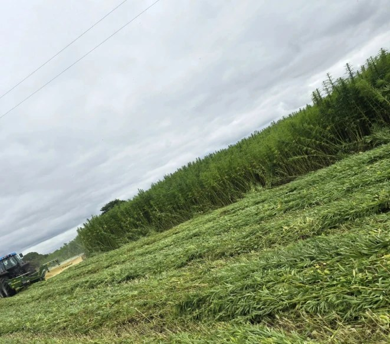
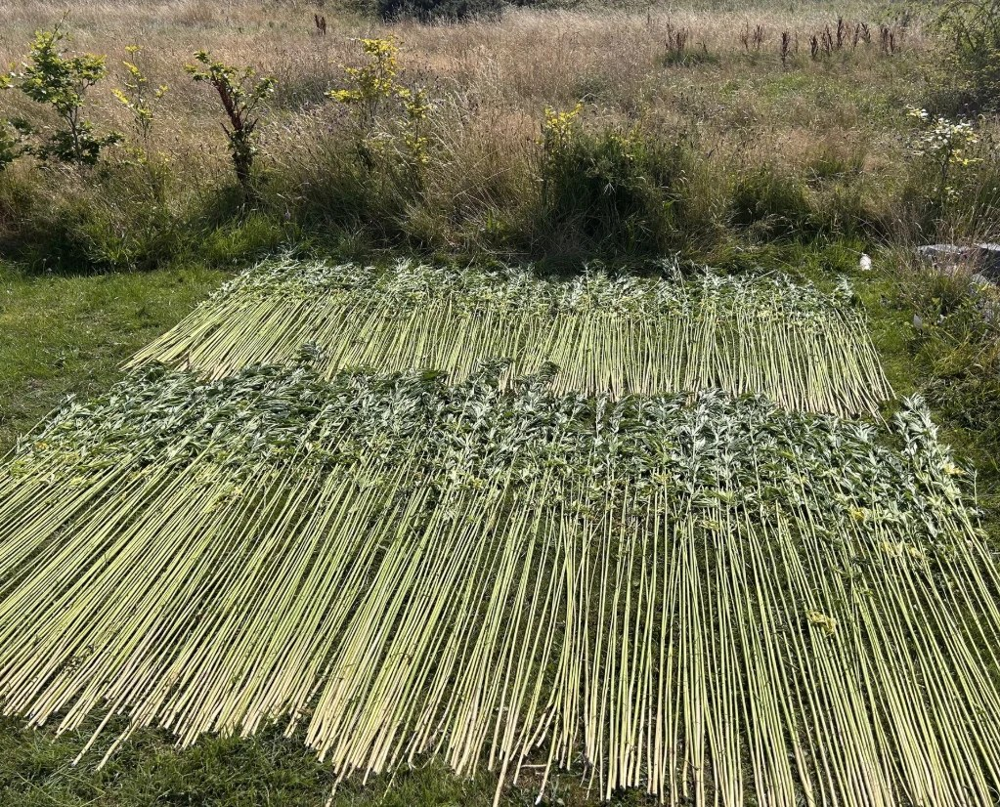
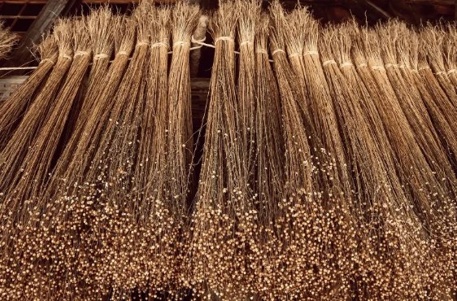
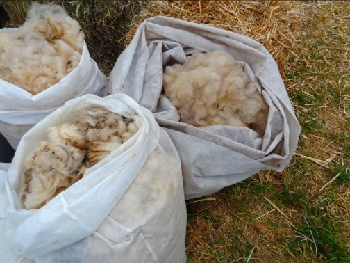
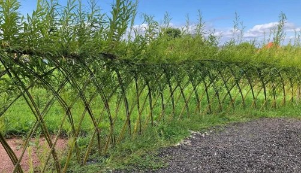
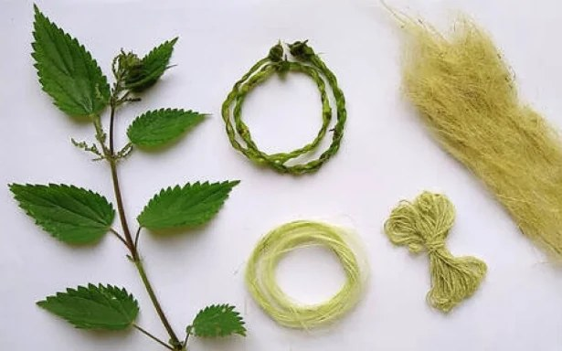

We want Ireland to grow, process and make more from its own fibres.
Natural Fibres Ireland brings together the people who can make that happen — growers, processors, researchers, manufacturers, designers and communities.

Fibres have always been part of how we make things.
Wool, flax, wood and plant fibres have been used for clothing, paper, rope, furniture and buildings for centuries.
What is changing is the context. Manufacturers are looking for lower-fossil materials, local feedstocks and products that fit a more circular economy.
Ireland has raw material. The opportunity is to build more of the value chain around it.
The fibres
Five starting points. Different materials, different strengths.





The hard part is not growing it.
The hard part is everything between the raw fibre and a product somebody wants to buy again.
Carbon is part of the story.
Plants absorb carbon as they grow. Long-lived biobased products can keep some of that carbon stored for longer.
But a crop absorbing CO₂ is not the same thing as a carbon credit. The EU CRCF framework is setting the rules for what can be measured and certified.
Understand carbon & fibres →What we want to help move
Real constraints. Real material. Real routes forward.
What fibre exists, where, and in what form?
Can it become a consistent industrial input?
Does the material perform where it matters?
Who buys it — and will they buy it again?
Grower. Processor. Researcher. Manufacturer. Designer.
If you are working with fibre — or want to — we want to hear from you.
You do not need a finished project. A material, a machine, a problem or an idea is enough to start.
Get involved